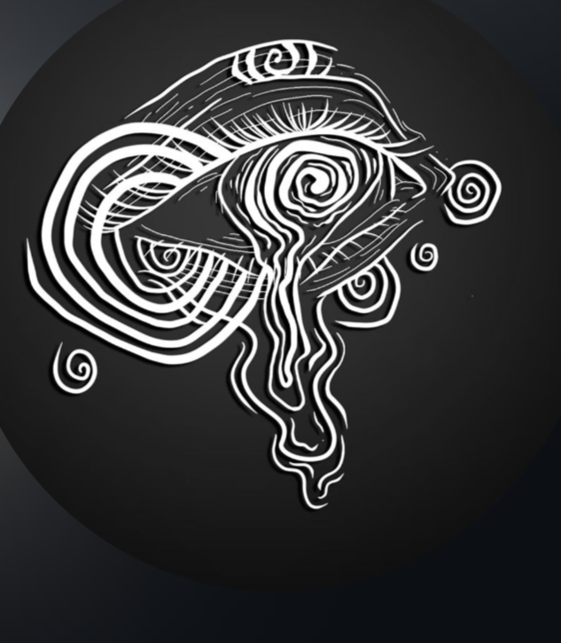

Rock Psicodélico • São Paulo
Cinco pessoas, um único transe — rock psicodélico feito pra abrir portas que deviam continuar fechadas.
A POISON DOOR nasceu em São Paulo, no fim de 2021, de uma jam que varou a noite e só terminou quando o sol nasceu. Do amanhecer veio o nome: uma porta envenenada — fácil de atravessar, difícil de voltar.
O som é parede de distorção encontrando sessão espírita: riffs lentos e densos, órgão fantasmagórico, grave hipnótico e levadas rituais. Ao vivo, a banda transforma o palco num portal — luz baixa, fumaça e repetição até o público perder a noção do tempo.
Hoje a POISON DOOR roda os palcos de São Paulo levando seu culto psicodélico a quem tiver coragem de abrir a porta.
“Toda porta é um convite. A nossa, você atravessa por conta e risco.”
Proposta de show, contratação ou ritual. Fale com a gente.